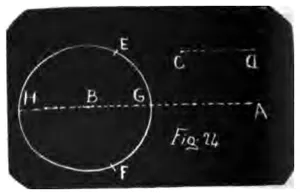
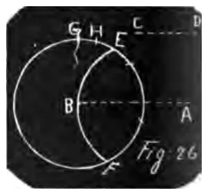
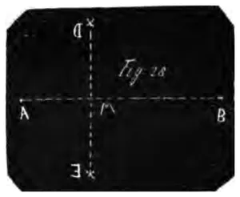
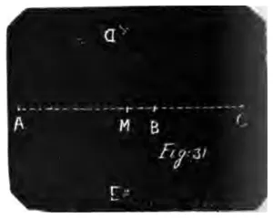

Book IV: Addition, Perpendiculars & Parallels¶
Libro Quarto: Dell’addizione e sottrazione delle distanze; delle perpendicolari e delle parallele (§§ 71–85)
Affine and orthogonal constructions by compass alone (§§ 71–85, pp. 40–46, folios 0065–0071): adding and subtracting arbitrary distances collinearly (§§ 71–75), erecting and dropping perpendiculars (§§ 76–79), constructing parallels in two circles (§§ 80–81), and pure compass tests for collinearity, orthogonality, and parallelism (§§ 82–85).

§§ 71–75: Addition & Subtraction of Distances
§§ 71–75 (Figs. 24–25, folio 0065–folio 0066, pp. 40–41). Given two independent distances \(AB\) and \(CD\), Mascheroni transfers \(CD\) collinearly onto virtual line \((A, B)\) to form the difference \(AB - CD\) (§ 72), the sum \(AB + CD\) (§ 73, Fig. 24), or the overshoot \(CD > AB\) (§ 74, Fig. 25): draw circle \(B(CD)\), cut it symmetrically at \(E, F\) with an arbitrary arc centered at \(A\), and bisect arc \(EF\) via Book II § 60 to land exact collinear points \(G\) (difference) and \(H\) (sum).

§§ 76–77: Erecting a Perpendicular at an Endpoint
§ 76. Problem (Fig. 26, folio 0067, p. 42). At a given point \(B\) of virtual line \((A, B)\), erect a perpendicular without using a straightedge.

§§ 78–79: Dropping a Perpendicular & Orthogonal Reflection
§ 78. Problem (Fig. 28, folio 0068, p. 43). From an external point \(P\), drop a perpendicular onto virtual line \((A, B)\).
§§ 80–81: Parallels Through an External Point
§ 80. Problem (Fig. 29, folio 0068, p. 43). Through a given external point C, construct a virtual line \((C, D)\) parallel to \((A, B)\).

§§ 82–85: Collinearity, Right-Angle & Parallel Tests
§§ 82–85 (Figs. 31–34, folio 0069–folio 0071, pp. 44–46). Concluding Book IV, Mascheroni supplies four pure-compass decision procedures replacing visual straightedge checks: